AcaciasAcianosAlhelísAmapolasAmarilisAzaleasAzucenasBegoniasBelladonasCameliasCampanillasClavelesClaveles chinosClematisCorazón de MaríaCrisantemosDaliasFlor de primaveraFlores para adelgazarFlores para cocinarFlores para enamorarFrancesillasFresiasGeraniosGirasolesGladiolosHortensiasIrisJacintosJazmínLaurelesLavandasLilasLiriosLisMadreselvasMagnoliasMargaritasMimosasNarcisosNenúfaresNomeolvidesOrquídeasPensamientosPeoníasPetuniasPrímulasRosasTulipanesVioletas
CactusCactus más rarosCómo usar
fertilizantesConvertirse en
floristaFlores amarillasFlores azulesFlores blancasFlores de bodaFlores
moradasFlores naranjasFlores para
perfumeríaFlores rojasFlores verdesFlores y
cosméticaFunerales y condolenciasHerramientas para
cuidarHuertos
verticalesPlantas de marihuanaPlantas
resistentes al solProductos cosméticosRemedios reafirmantes
Respiración y
fotosíntesisPlantas de salón
Fotos e imágenes
En Flores Pedia puedes encontrar 499 fotos, imágenes o dibujos.
En esta sección las listamos todas, distribuidas en distintas páginas. Ésta es la página 5. Puedes
ampliar la información de la foto y ver a qué artículo corresponde. Para ello, simplemente pincha
sobre ella.
Acacias, flores
amarillasFlores
amarillas¿Cómo cuidar claveles
chinos? Características de los
claveles chinos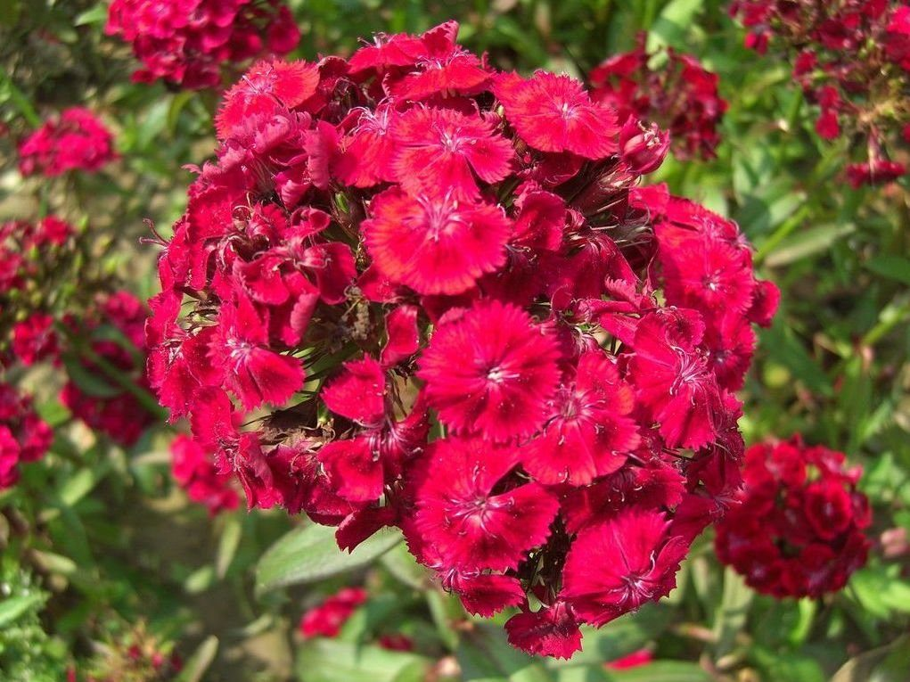Claveles
chinos
Características de los
claveles chinos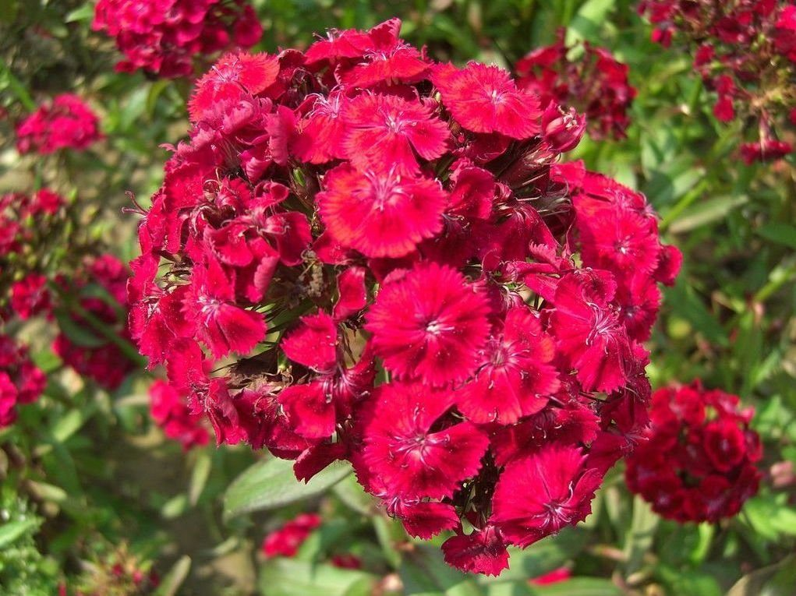Claveles
chinos Flores que ayudan a
adelgazarLas mejores plantas
decorativas para el salónCorazones de María
blancas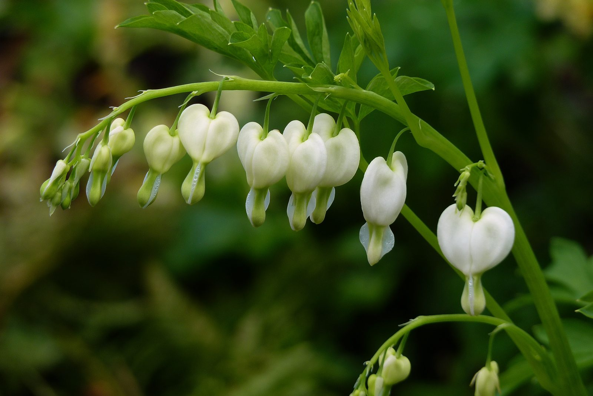Flores corazón de
virgen
Flores que ayudan a
adelgazarLas mejores plantas
decorativas para el salónCorazones de María
blancas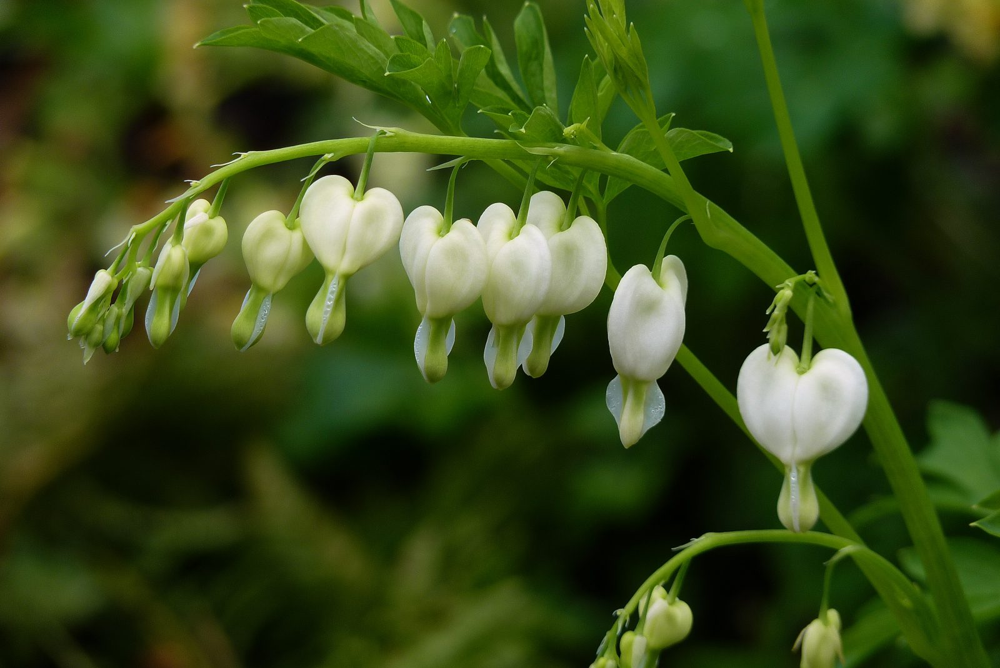Flores corazón de
virgen Flores colgantes
Dicentra spectabilis
Flores colgantes
Dicentra spectabilis Flores corazones
sangrantes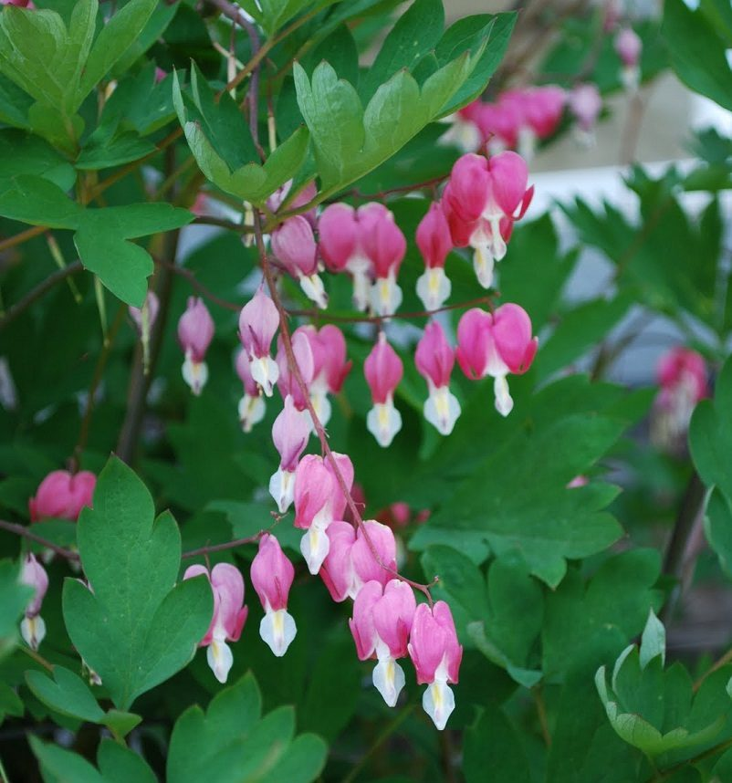Flores corazón
sangrante
Flores corazones
sangrantes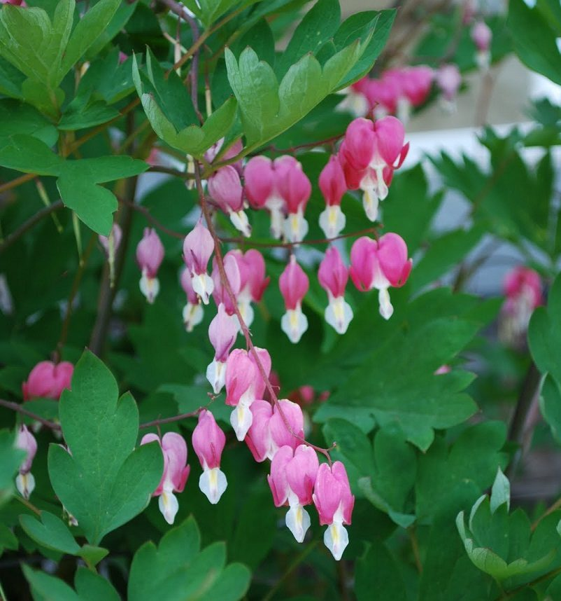Flores corazón
sangrante Corazones de María
rosasFlores corazón de MaríaCorazón de
María
Corazones de María
rosasFlores corazón de MaríaCorazón de
María Violetas en la
naturaleza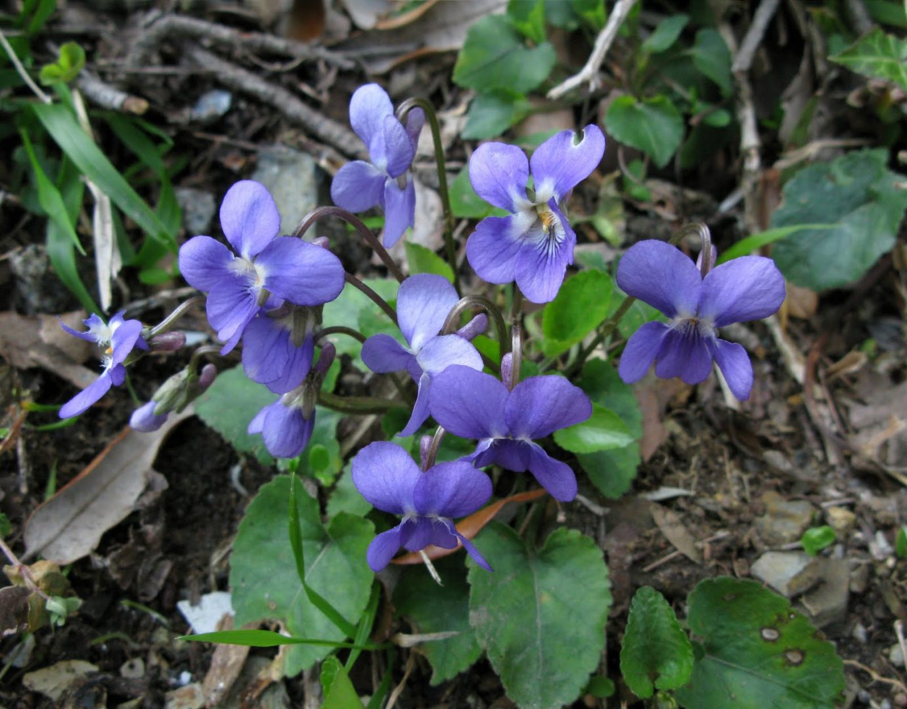Flores de
violetas
Violetas en la
naturaleza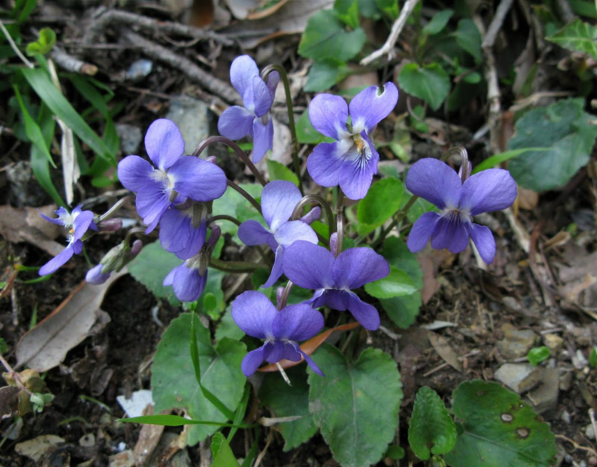Flores de
violetas Violeta
blanca
Violeta
blanca Violetas Flores de violetas
blancasVioletas
blancasVioletaVioletas en el campoVioletas
Violetas Flores de violetas
blancasVioletas
blancasVioletaVioletas en el campoVioletas
Características de los
claveles chinos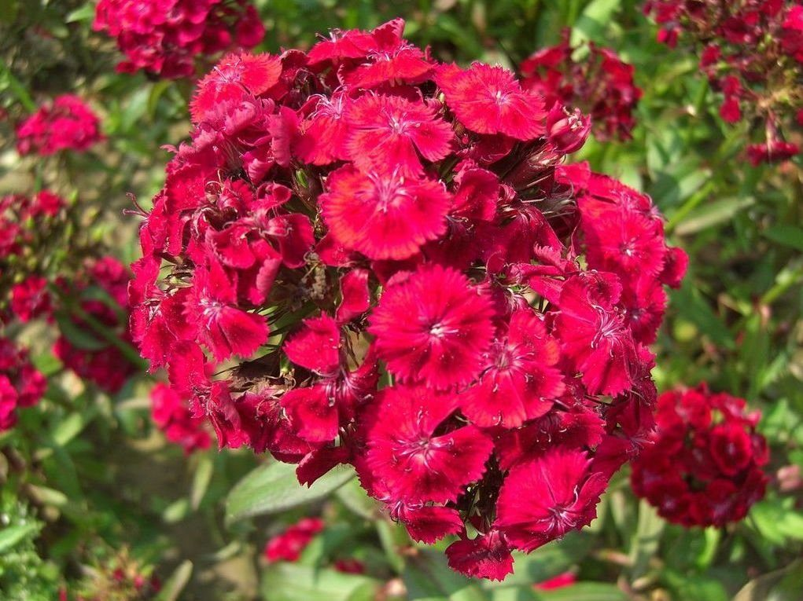Claveles
chinosFlores que ayudan a
adelgazarLas mejores plantas
decorativas para el salónCorazones de María
blancas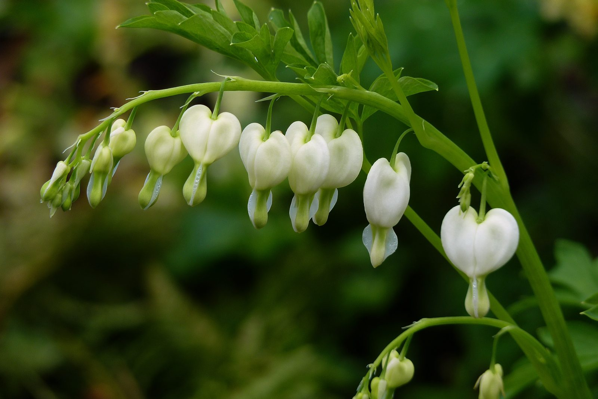Flores corazón de
virgenFlores colgantes
Dicentra spectabilisFlores corazones
sangrantes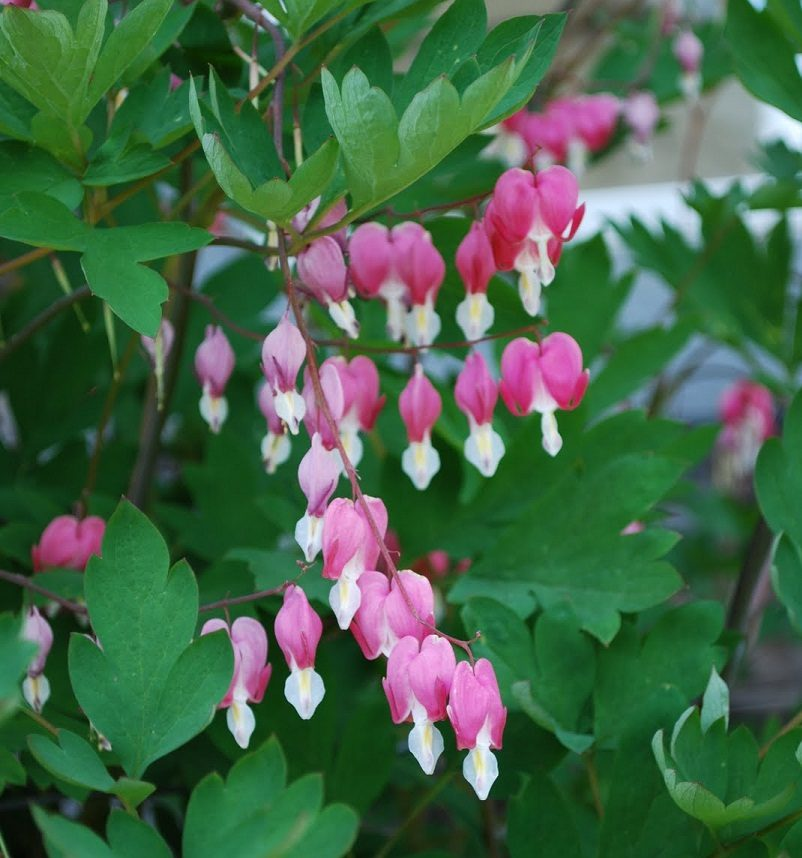Flores corazón
sangranteCorazones de María
rosasFlores corazón de MaríaCorazón de
MaríaVioletas en la
naturaleza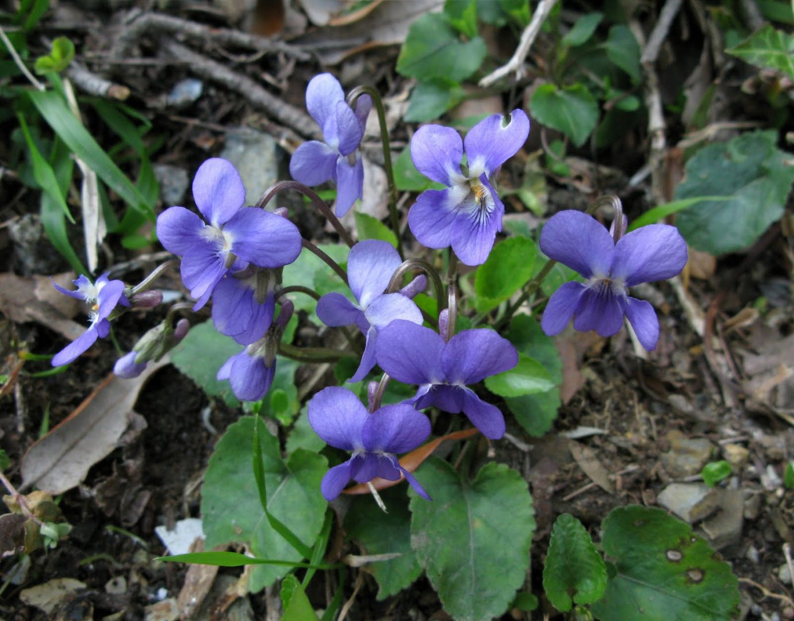Flores de
violetasVioleta
blancaVioletas Flores de violetas
blancasVioletas
blancasVioletaVioletas en el campoVioletas